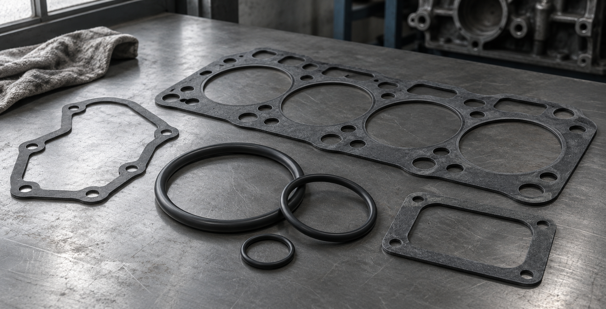

Гумове ущільнювальне кільце.
Приклад оформлення картки: параметри, сумісність і ціна потребують підтвердження.
Підготувати звернення
Дані для підбору
Модель і модифікація двигуна, вузол, кількість, артикул або креслення за наявності.
- Артикул
- Потребує уточнення
- Сумісність
- Перевіряється за запитом
- Ціна і наявність
- Потребують уточнення